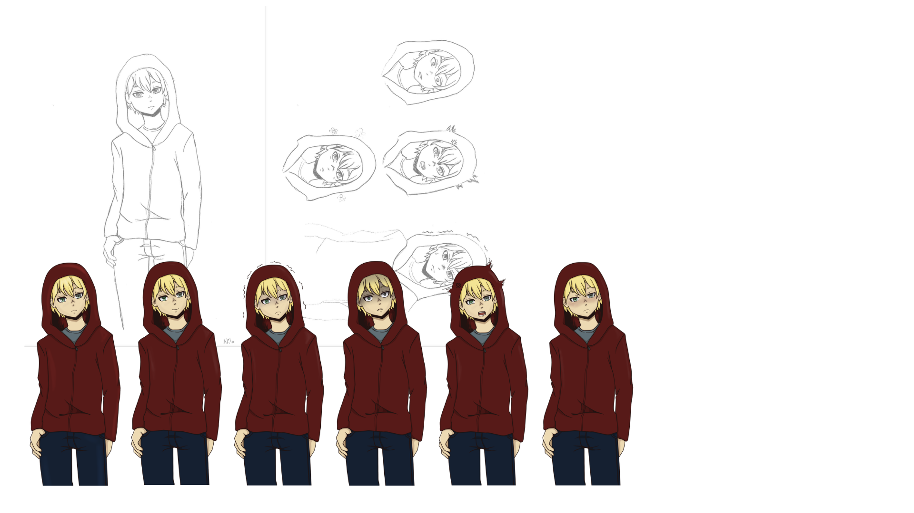
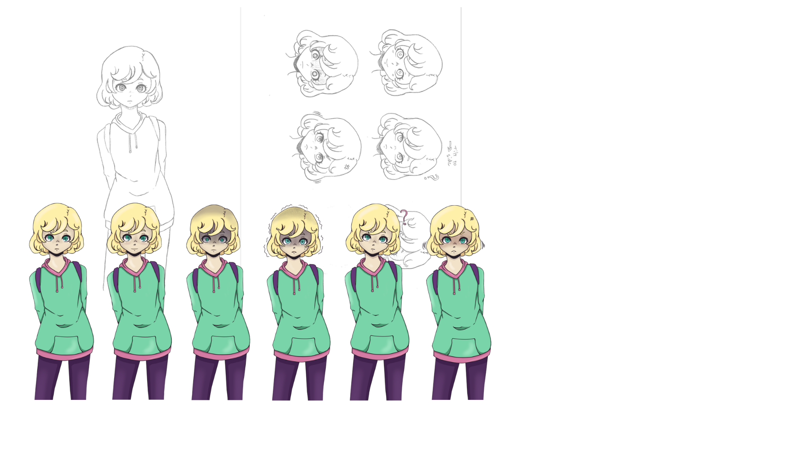

Characters
The game has two main characters. Older brother and sister that you take turns to play as.
These characters are Nilo and Mina.
Nilo's side of the story takes place in town and is more sociable. Most side characters appear there.
There is also "placeholder people" I made to certain sprites on the background just to make the town feel more lively.



